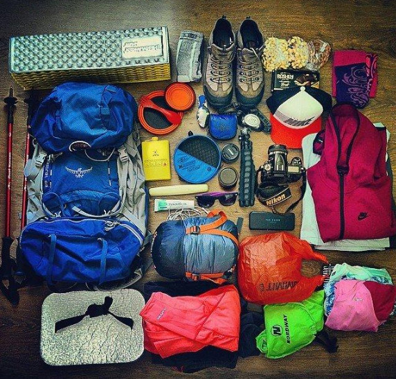

До походу, навіть самому легкому потрібно готуватися, як психологічно , так і фізично . Це значно полегшує подолання всього маршруту і зводить до мінімуму всякі неприємні моменти (перевтомою і ін.).
Рівень складності маршруту
Що ж таїть в собі рівень складності і як він визначається? Чому часто рівень складності неоднозначний, наприклад, початковий/середній? Як визначити відповідний рівень складності? На ці та інші запитання шукайте відповіді у цій статті.
Що таке рівень складності?
Рівень складності це суб'єктивна оцінка складності проходження маршруту учасниками. При цьому передбачається, що у майбутнього учасника буде мінімальний рівень підготовки. При цьому враховуються особливості регіону та можливий вплив погіршення погодних умов.
Якими бувають рівні складності
Початкова складність — маршрут під силу практично будь-якій фізично здоровій людині. Це аж ніяк не означає, що до маршруту не потрібно готуватися. Але якщо ви полінуйтеся витратити трохи часу на підготовку, то, швидше за все, у вас буде невеличка кріпатура в перші 2 дні туру. Пройдені за день відстані при початковому рівні складності рідко перевищують 15 км (20 км для сплавів і 50 км для велотурів).
Середня складність — маршрут потребує мінімальної підготовки, але під силу фізично здоровій людині, хоч і вимагає від неї додаткових зусиль. До турів середньої складності краще готуватися заздалегідь (як мінімум за тиждень до початку заходу) — бігати, кататися на велосипеді, присідати тощо. Якщо ви знехтуєте підготовкою, перші 2 дні подорожі можуть вас ґрунтовно втомити, хоча надалі ви, швидше за все, втягнетеся, і на фініші будете почувати себе відмінно. При середньому рівні складності пройдені за день відстані рідко перевищують 25 км (40 км для сплавів і 80 км для велотурів).
Висока складність — маршрут зможе подолати будь-яка фізично здорова людина, але без попередньої підготовки витрати сил іноді будуть дуже високими і будуть затьмарювати враження від маршруту. Іншими словами, до складних походів обов'язково потрібно готуватися. Найкраще активізувати підготовку за два тижні до початку туру.
Високий рівень складності передбачає не тільки значні відстані — більше 25 км в день, але й значний перепад висот — нерідко 1500 метрів в день (більше 40 км для сплавів і більше 80 км для велотурів).
Здвоєний рівень складності
Рівень складності залежить не тільки від пройдених відстаней і перепадів висот, але й від якості доріг/стежок, по яких вам доведеться подорожувати. Іноді 5 км по дикій місцевості віднімають набагато більше сил і часу, ніж 15 км по добре хоженій стежці, чи дорозі. До того ж на якість доріг і стежок дуже сильно впливає погода. Тому, при розрахунку рівня складності маршруту, ми враховуємо особливості погоди в регіоні.
Наприклад, якщо буде сухо, маршрут буде досить легким, щоб оцінити його рівень складності як початковий. У разі опадів деякі стежки можуть стати складніше, що потребують додаткових зусиль і часу, тому граничний рівень складності може бути визначений як середній. Можливо, навіть доведеться внести зміни в маршрут і обійти складну ділянку по дорозі, пройшовши при цьому додаткові кілометри, але заощадивши сили на схилі.
Для піших походів здвоєний рівень складності іноді акцентує увагу на вашому спорядженні (в кедах маршрут буде складнішим, ніж у туристичних черевиках) і вазі вашого рюкзака (важкий рюкзак збільшує навантаження на ваш організм).
Прийнятний рівень складності
Розраховуючи рівень складності, ми орієнтуємося на фізично здорових людей з мінімальним рівнем підготовки. Мінімальний рівень підготовки для нас — це щоденні прогулянки на свіжому повітрі, періодичне ігнорування ліфта і, можливо, любительське заняття спортом (футбол раз на тиждень тощо). Якщо ваша фізична активність обмежується щоденними походами в магазин через дорогу і поїздками на роботу, ми рекомендуємо вам хоч трохи підготувати свій організм до подорожі. Це ж все-таки активний відпочинок, де ваш мозок буде відпочивати, зате активно працюватимуть практично всі м'язи.
Але не забувайте, що всі обмеження знаходяться у вас в голові і велика частина перешкод — це відмовки.
У будь-якій, навіть найскладніший наш тур може поїхати практично будь-яка людина, головне — бажання. На нашій практиці була величезна кількість випадків, коли люди з відносно неспортивної фігурою з гідністю проходили складні маршрути і долали численні перешкоди. При цьому «спортсмени» іноді сходять навіть з найлегших маршрутів, мотивуючи це втомою, буденністю тощо. Сила духу однозначно сильніше фізичної сили!
Якщо ви хочете піти в похід — ви підете, якщо ви хочете подолати всі складнощі похідного життя — ви подолаєте, якщо ви хочете стояти на вершині — ви будете там (якщо звичайно погода не підведе:)
Якщо у вас є сумніви, підійде той чи інший тур особисто вам, напишіть нам, і ми постараємося розвіяти ваші сумніви, адже часто вони безпідставні.
До походу, навіть самому легкому потрібно готуватися, як психологічно , так і фізично .
Це значно полегшує подолання всього маршруту і зводить до мінімуму всякі неприємні моменти (перевтомою і ін.).
Якщо мова йде про піший похід, то прекрасно підходить біг підтюпцем і присідання. Якщо говорити про велопоходах, то тут краще готуватися разом з велосипедом :) Це пов'язано з тим, що різні групи м'язів знаходяться в різній напрузі.
Починати готуватися до походів потрібно заздалегідь.
Для нескладних походів цілком може вистачити і тижня, для інших цей термін повинен становити мінімум дві (для походів на Кавказ і цього може виявитися мало).
Для початку слід знати, що біг в першу чергу розвиває вашу дихалку. Це дуже важливо на підйомах, де непідготовленому організму дуже часто не вистачає повітря. Крім дихалки, біг допомагає зміцнити м'язи голеностопа, що в похідних умовах виходить на перший план (поверхня не завжди буває твердою і рівною).
Додатково до цього, біг зміцнює інші м'язи ніг, а також м'язи поперекового пояса, прес і т.д. Але для того, щоб нормально переносити похідні навантаження, тільки бігу буде мало.
Другою складовою підготовки до походу є присідання, які іноді приносять навіть більше користі, ніж біг. Починати присідати бажано не менше ніж за тиждень до походу. За цей час ваші м'язи найімовірніше встигнуть звикнути до навантажень і до початку походу у вас повинна повністю пройти крепатура. Присідати рекомендуємо кожен день мінімум по 80 разів, найкраще в чотири підходи по 20 разів.
Для підготовки до велосипедного походу цілком може підійти і біг, але оптимальними все ж є навантаження під час їзди на велосипеді. Тому мінімум за тиждень до походу необхідно почати щодня їздити на велосипеді поступово збільшуючи кілометраж.
Якщо велопохід передбачає подолання більше 50 км в день, то готуватися бажано почати ще раніше. Звичайно, можна готуватися до велосипедного походу бігаючи і присідаючи, а до пішого походу - катаючись на велосипеді, але і в першому і в другому випадку будуть задіяні групи м'язів, на які не лягає основне навантаження.
Важливо!
Після повернення з походу потрібно зберегти певний рівень фізичних навантажень на ноги (багато ходити, бігати, їздити на велосипеді та ін.) І поступово знижувати їх. Це запобіжить болі в суглобах (особливо в колінних).
Психологічна підготовка до походу є невід'ємною частиною загальної підготовки до походу. Слід заздалегідь налаштовуватися на те, що похід не буде легкою прогулянкою або екскурсією.
А також необхідно розуміти, що не завжди світить сонечко, а під ногами суха і рівна поверхня. Виходячи з цього, необхідно поставитися відповідально до фізичної підготовки і до вибору спорядження. Якісне спорядження захистить вас від багатьох проблем і додасть вам бадьорості духу.
Підготовка до походу повинна бути комплексною. І якщо загальні питання зможуть вирішити інструктора, то за своє спорядження, за свою фізичну і психологічну форму відповідає тільки учасник.
Тому не соромтеся заздалегідь дізнаватися у інструктора відповіді на всі ваші запитання, а також врахувати рекомендації інструктора з вибору спорядження ну і звичайно готуватися фізично і психологічно.
І не варто думати, що похід це нездоланна перешкода. У походи ходять люди різного віку і різної комплекції. Так що головне - просто готуватися до походу заздалегідь і не накручувати себе :)
Будь похід в гори починається з комплектації рюкзака необхідним спорядженням. Тут наведено список спорядження для шестиденного походу в гори з поправками на сезонність. Для зручності, список спорядження розділимо на кілька груп: особисті речі, приватне туристичне спорядження, взуття і одяг, групове спорядження.
Особисті речі:
- Квитки, документи, гроші (бажано все в герметичній упаковці , щоб не намокло).
- Лейкопластир, еластичний бинт (обов'язково) та медикаменти від своїх хронічних хвороб (якщо вони є).
- ЧЛМ (чашка, ложка , миска) — бажано металеві, але можна й пластикові
(але вони можуть погано митися та за умови недбайливого використанні можуть легко зламатися).
- Налобний ліхтарик (бажано, щоб був у кожного учасника, але можна обійтися і одним на намет).
Він полегшує пересування в темний час доби і пошук необхідних речей (сходити в туалет, знайти речі в рюкзаку тощо).
- Засоби особистої гігієни (зубні щітка і паста, вологі та сухі серветки, туалетний папір тощо)
Бажано брати напівпорожні тюбики пасти, невеликі шматки мила тощо, щоб зменшити вагу рюкзака.
- Маленьке рушник. Бажано такий, який швидко сохне і займає мало місця.
- Сонцезахисні окуляри — актуальні в теплу/жарку пору року, але не є обов'язковим атрибутом звичайного походу.
- Мобільний телефон, фотоапарат тощо.
Якщо ви вирішили взяти в похід електронні прилади, постарайтеся подбати заздалегідь про зарядку
(зарядіть заздалегідь і без потреби не включайте) і захист від вологи (бажано убезпечити від намокання герметичною упаковкою).
- Пластикова 1,5 літрова пляшка води (або інша ємність для води аналогічних розмірів).
Ємність для води просто необхідна в поході, адже не рідко вода буває тільки в місцях стоянок,
а для комфортного пересування вода просто необхідна.
Особисте туристичне спорядження:
- Рюкзак (40-80 літрів) — розміри залежать від кількості речей (зазвичай, чим більше рюкзак, тим більше непотрібних речей беруть із собою:)
Вкрай бажано, щоб вага порожнього рюкзака становила 10-15% від ваги рюкзака в зборі.
- Спальник — повинен відповідати погодним умовам
(в ідеалі температура комфорту спальника повинна бути на 5 градусів вище найнижчих прогнозованих температур, для дівчат бажано ще вище).
Вкрай бажано, щоб вага спальника становила 10-15% від ваги рюкзака в зборі.
- Намет (або навіть місце в наметі).
Якщо ви збираєтеся в похід самостійно і у вас є намет (найчастіше більше ніж на двох осіб),
обов'язково заздалегідь повідомте про це організаторів (інструктора) , щоб не тягнути зайві кілограми.
Дуже часто намет брати не потрібно (коли вас підселять до когось, якщо є вільні місця в іншому наметі і, звичайно,
якщо ви не проти жити з кимось).
Якщо ж ви вирішили взяти свій намет,то пам'ятайте, що туристичний намет повинен бути двошаровим
(він найкраще захищає від опадів, а ще не дає змокнути речам всередині намету від конденсату)
і важити близько 1,2 кг на людину (наприклад, тримісний намет повинен важити 3,6 кг).
Намет часто носять чоловіки,але за відсутності чоловіків (або якщо їх занадто мало), намет (або його частину) змушені нести жінки/дівчата.
Якщо у вас немає намети, заздалегідь повідомте про це організаторів (інструктора), вони постараються знайти вам вільне місце
(під відкритим небом у нас ніхто не ночує ).
- Килимок (пінка , карімат) — це ваш матрац на час походу. Килимок повинен бути легким і міцним.
- Сидушка (піддупник :) — невеликий шматочок килимка (пінки , карімата).
За допомогою паска прикріплюється до п'ятої точки і дозволяє сидіти практично на будь-яких поверхнях,
без небезпеки забруднитися, застудитись тощо Без сидушки часто можна обійтися, але іноді вона буває до речі.
Взуття та одяг для походу в теплу пору року (липень-серпень для Карпат):
Зручне взуття з хорошим протектором підошви (черевики або кросівки, в залежності від ваги рюкзака і рівня фізичної підготовки),
бажано, щоб воно не промокало і швидко висихало (коли прогнозують суху і теплу погоду, що дуже часто буває влітку в Криму, можна обійтися міцними сандалями, бажано із закритим носком). У цьому взутті ви будете проводити (ходити) більшу частину дня, тому це взуття повинно бути якісним (воно повинно добре тримати ногу на схилах і не натирати вам мозолі). Не рекомендуємо вам використовувати нове взуття, практично завжди воно натирає мозолі (іноді туристи змушені зійти з маршруту через криваві мозолів).
Змінне взуття (легкі сандалі або гумові шльопанці) для стоянок, поїзду, моря тощо. Це взуття повинно бути легким, займати мало місця і швидко сохнути (дуже часто його використовують для водних процедур в поході).
Міцний і легкий одяг для ходьби (залежно від погоди, це можуть бути шорти, легкі штани, футболка, легка флісова кофта). Одяг не повинен сковувати рухів, дихати і швидко сохнути. Прекрасно зарекомендував себе одяг з легких синтетичних тканин, а ось одяг з бавовни є небажаним, він погано сохне (що призводить до втрати тепла) і, часто, більше важить (чим синтетичний одяг). А ще одяг має бути міцним, інакше перший-ліпший кущ може ґрунтовно зіпсувати ваш зовнішній вигляд :)
Штормовий одяг:
куртка і штани. Для цих цілей відмінно підходить одяг з мембранних тканин, але якщо такого одягу немає (або немає можливості купити, він досить дорого коштує), то можна обійтися звичайним поліетиленовим дощовиком. Якщо прогнозують дощі, дощовиків потрібно брати кілька штук, інакше будь-яка підступна гілка може дуже швидко зробити ваш костюм таким, що швидко змокне. Влітку, якщо дощі не прогнозують, можна і не брати захист від дощу, але іноді прогнози бувають не точними, тому рекомендуємо не ризикувати і покласти в рюкзак один дощовик (на всякий випадок).
Теплий одяг для стоянок:
флісову кофту,
теплі штани (особливо актуально для жіночої половини),
теплі шкарпетки (зазвичай одну пару),
легкі рукавиці,
легка шапка.
Не бажано брати речі з вовни, вони хоч і відмінно гріють, але багато важать і погано сохнуть.
Влітку можна обійтися і однією флісовою кофтою для всіх випадків життя, але її доведеться берегти (в першу чергу від бруду). Якщо прогнозована температура повітря не опускатиметься нижче +20 (актуально для літнього Криму), можна обійтися без теплих шкарпеток, рукавичок і шапочки.
Змінний одяг:
труси, футболки (якщо тепло, вистачає і двох, при щоденному пранні), шкарпетки (не більше трьох пар).
Головні убори для захисту від сонця (панамка , Buff, тощо). Влітку головні убори обов'язково повинні захищати не тільки вашу голову,
але і шию з вухами в горах дуже легко обгоріти навіть в не самий гарячий період року).
Взуття та одяг для походу в не дуже теплу пору року (травень/червень/вересень/жовтень для Карпат, іноді і початок липня):
Зручне взуття з хорошим протектором підошви (черевики або кросівки для мультиперегонів), яке не промокає і швидко сохне.
У цьому взутті ви будете проводити (ходити) більшу частину дня, тому це взуття має бути якісним, воно повинно добре тримати ногу на схилах
(особливо на слизьких), добре фіксувати гомілкостоп(захищати ногу від вивихів) і не натирати вам мозолі.
Не рекомендуємо використовувати нове взуття, воно практично завжди натирає мозолі (іноді туристи сходять з маршруту, через криваві мозолів). Якщо у вас немає взуття, яке не промокає, можна брати змінне взуття (це може збільшити вагу вашого рюкзака), а мокре взуття сушити біля вогнища.
Змінне взуття (легкі сандалі або гумові шльопанці) для стоянок, поїзду, моря тощо. Це взуття повинно бути легким, займати мало місця і швидко сохнути (зазвичай його використовують для водних процедур в поході ).
Міцний, легкий і, бажано, такий, що не продувається вітром одяг для ходи (залежно від погоди, це можуть бути легкі штани, футболка, легка флісова кофта, або тепла флісова кофта). Одяг не повинен сковувати рухів, дихати і швидко сохнути. Як вже згадувалося вище, найкращий — одяг з легких синтетичних тканин, а одяг з бавовни небажаний (погано сохне, що призводить до втрат тепла, і зазвичай більше важить, ніж синтетичний одяг). Так як в означений період часто бувають дощі, а іноді і сніг, одяг має гарно зберігати ваше тепло (але при цьому ви не повинні зайвий раз пітніти) і швидко сохнути під час руху (часто одяг намокає від вологи, яка залишається на траві, кущах і гілках після дощу, або туману). Іноді можна використовувати легку куртку, що не продувається, для захисту від вітру.
Штормовий одяг: куртка і штани.
Для цих цілей відмінно підходить одяг з мембранних тканин, але якщо такого одягу немає (або немає можливості купити, він досить дорого коштує), можна обійтися звичайним поліетиленовим дощовиком. У означений період опади не рідкість, тому постарайтеся запастися дощовиками про запас. Дощовики можуть легко прийти в непридатність при проходженні хащ, або їх може зіпсувати випадкова гілка. Крім цього, мокрий дощовик складно одягнути другий раз. Виходячи з даних про районі проведення походу і прогнозовану кількість опадів, беріть з собою необхідну кількість дощовиків (дуже часто вистачає трьох дощовиків, при дбайливому використанні).
Теплий одяг для стоянок (а іноді і ходи): дві теплі флісові кофти, теплі штани (особливо актуально для жіночої половини), теплі шкарпетки (бажано дві пари), легкі рукавиці (бажано, щоб не пропускали повітря), легка тепла шапка. Не беріть речі з вовни, вони хоч і відмінно гріють, але багато важать і погано сохнуть. Речі для стоянок можна комбінувати з речами для пересування за принципом капусти (одягати новий шар, коли холодно, і знімати, коли жарко).
Змінний одяг:
труси, футболки (мінімум 3 штуки), шкарпетки (мінімум 5 пар, з яких 2 теплі будуть використовуватися і під час стоянок).
Головні убори для захисту від сонця, вітру і дощу (панамка , Buff, тощо). Навіть при мінімальній кількості сонця в горах можна обгоріти, тому бажано захистити голову, шию і вуха від дії ультрафіолету. Іноді актуально брати кілька головних уборів, якщо прогнозують вологу погоду.
Групове спорядження:
Казани для приготування їжі.
Казани зазвичай діляться між учасниками чоловічої статі. При цьому їх вага враховується при розподілі продуктів.
Пальник і газові балони. Залежно від специфіки походу, можуть бути і відсутніми в переліку спорядження. Зазвичай несе інструктор і учасники чоловічої статі.
Черпак, дошка для нарізки продуктів , губка для миття котлів. Зазвичай несе інструктор.
Пилка, сокира. Залежно від специфіки походу, можуть бути і відсутніми в переліку спорядження.
Сірники, запальнички, ніж, аптечка, карта місцевості, компас. Зазвичай несе інструктор.
У разі відсутності необхідних речей (намета, спальника, рюкзака тощо), повідомте про це організаторів, і вони постараються вирішити проблему.
До ваги особистого спорядження (особисті речі, особисте туристичне спорядження, взуття і одяг для походу) додасться вага продуктів (приблизно 0,75 кг на один день) і вага групового спорядження (тільки чоловікам ). Тому постарайтеся підійти виважено до зборів у похід, зробіть вибір на користь легких і практичних речей. Пам'ятайте, що величезні важкі рюкзаки поступово відходять у минуле і вага рюкзака для літнього шестиденного походу по Криму легко може становити 8-10 кг.
Почну з того, що блискавка - це сильний і нетривалий електричний розряд між хмарами, або хмарою і землею.
Блискавка можлива тільки при наявності грозових хмар, які утворюються при змішуванні холодних і теплих потоків повітря. В горах грозові хмари виникають частіше, ніж над рівнинами. Це пов'язано з наявністю як прогріваються, так і затінених ділянок в горах, що і веде до змішання холодних і теплих повітряних мас. Крім цього грози можуть виникати при змішуванні холодних і теплих фронтів. Перші грози менш тривалі, ніж другі, а й ті й інші обов'язково супроводжуються розрядами блискавок.
Варто відзначити, що в горах, які знаходяться ближче до екватора, грози бувають частіше. Це пов'язано з підвищенням середньорічних температур у міру наближення до екватора. Тому, наприклад, на Кавказі грози бувають частіше, ніж в Карпатах.
Про блискавках на рівнинах нам втовкмачують з самого дитинства, і всі ми знаємо
кілька основних правил:
не ховатися під самотньо стоять деревом;
переміститися якомога нижче (при необхідності навіть лягти).
У горах людина іноді є найвищою точкою (особливо під час перебування на вершині гори або хребта), виконуючи функцію громовідводу. Тому при наявності грозових хмар і високу ймовірність виникнення грози, слід початися спускати якнайнижче, що вбереже від прямого попадання блискавки.
На жаль скидання висоти не завжди достатньо, навіть якщо ймовірність прямого попадання буде маленькою, завжди існує небезпека постраждати від електричних розрядів, які рухаються по схилу після попадання блискавки в вершину або гребінь (а також гострі виступи).
Не варто вважати, що блискавка б'є тільки в найвищі виступи і вершини. Електричний заряд шукає найкоротший шлях, тому якщо хмара знаходиться не над вершиною, а в стороні (а іноді і нижче вершини), блискавка може вдарити в найближчий виступ. Виходячи з цього, варто вживати всіх заходів обережності.
Основні дії для захисту від удару блискавки в горах
Для захисту від удару блискавки в горах слід керуватися правилами створення громовідводів. Для початку необхідно визначити всі потенційно привабливі для блискавки виступи, які знаходяться (або будуть знаходитися) у безпосередній близькості від грозової хмари. Після цього слід піти на відстань більше 20-ти метрів від всіх потенційно небезпечних об'єктів (спуститися в низину). Не слід ховатися від удару блискавки поблизу водойм і близько струмків, вода дуже добре проводить електричну енергію. Крім цього не варто ховатися в ярах, під час грози по дну яру, швидше за все, потече потік води.
Особливу увагу варто приділяти місця установок наметів на нічліг. Навіть якщо ввечері небо ясне, вночі може бути гроза і в намет може потрапити блискавка. Тому табір не можна ставити на хребті і на перевалах. Якщо іншого виходу немає, необхідно постаратися не ставити намет на краю виступів і майданчиків. Крім цього не варто намет безпосередньо під виступом. В цьому випадку ви можете уникнути удару блискавки, але блискавка, що потрапила в виступ над вами, може спровокувати каменепад.
Під час грози небажано розмовляти по мобільному телефону. Не дивлячись на досить низьку ймовірність попадання розряду блискавки в мобільний телефон додатковий ризик не зовсім доречний.
Якщо у вас з собою велику кількість металевого спорядження (льодоруб, «кішки» і т.п.), варто відкласти його в сторону на відстань 10-15 метрів. Зовсім не обов'язково, що в це спорядження вдарить блискавка, але це може притягнути електричні розряди після попадання блискавки в найближчий виступ.
У разі якщо ви ще не встигли забратися високо і перебуваєте в зоні лісу, потрібно постаратися уникнути сусідства з високими деревами.
У будь-якому випадку, до грозі бажано бути готовим заздалегідь і по можливості прорахувати ймовірність потрапити в негоду на хребті або на вершині. Для цього вистачить звичайної уважності і прогнозу погоди на час перебування в горах. Якщо ви все-таки перебуваєте на хребті і далеко бачите грозові хмари, не варто панікувати. Можливо, гроза не рухається в вашу сторону, або знаходиться на безпечній відстані від вас. Відстань від грози до вас можна дізнатися, порахувавши, скільки проходить секунд з моменту спалаху блискавки до гуркоту грому і, розділивши результат на три (за три секунди звук проходить близько одного кілометра). Таким чином, можна дізнатися не тільки відстань грози, але і швидкість її наближення. Це допоможе краще зорієнтувати в ситуації.
Варто також відзначити, що грози в горах найчастіше бувають після обіду. Тому потрібно намагатися планувати маршрут з урахуванням можливого попадання в грозу в другій половині дня.
Сподіваюся, ця інформація допоможе вам уберегтися від удару блискавки в горах.